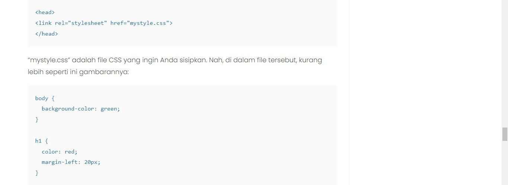

Kalau Inline CSS hanya mempengaruhi satu baris, External CSS bisa mempengaruhi keseluruhan website. Tentunya hal ini dilakukan dengan mengubah file CSS, tanpa perlu menuliskan kode secara berulang. Perlu diperhatikan, ciri khas dari External CSS adalah menggunakan tag head. Setelah itu, baru sisipkan file CSS sesuai kebutuhan. Contohnya seperti ini:
